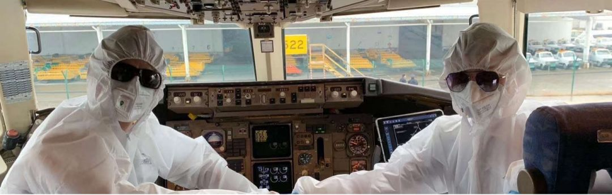

江苏到河南，800公里加急：一吨口罩原料的产业链接力 | 棱镜
原文链接 备份链接 作者 | 张庆宁 出品 | 棱镜·腾讯小满工作室 欢迎下载腾讯新闻APP，阅读更多优质资讯 1月27日中午，李舒看到我们发布的文章——《这座城市每天可生产165万个口罩，但急需原材料》，她通过北京市朝阳区一位读者辗转找 …


作者 | 罗松松 编辑 | 张庆宁
出品 | 棱镜·腾讯小满工作室
欢迎下载腾讯新闻APP，阅读更多优质资讯

在1月30日举行的发布会上，卫健委新闻发言人米锋表示，根据当前应对疫情工作需要，运送物资到湖北省的货车司机需要采取必要的防护措施，返回之后无发烧、咳嗽等症状，允许其继续运送物资。
这是物流企业最想听到的消息。
一家大型快递公司内部员工对透露，武汉宣布封城之后，他们向疫区运送了20多批物资，去了40多名司机，“基于疫情防控的需要，这些司机返回之后必须隔离。”
“他们本来是在放假，看到群里号召，报名参与援助，相当于志愿者，没拿一分钱，而且还冒着风险。但从武汉那边回来之后需要隔离14天，这种情况下，志愿报名的司机越来越少，运力缺口越来越大。”上述员工表示。
过去一周多时间，全国各地的物资正紧急运往武汉等湖北疫区，正值春节假期，大部分运输公司刚好处于“半歇业”状态，可以调动的运力资源本就有限，隔离政策加剧运力匮乏。
卫健委的上述表态有望缓解运力的供需矛盾。

把5G设备运进火神山
闫东方是德邦快递一名司机，武汉本地人。
除夕夜凌晨一点多钟，他接到武汉车队负责人电话，让他早上去接一辆从北京来的车，车上运的是捐赠给火神山医院的5G通信设备，着急等着安装。
大年初一，天蒙蒙亮，闫东方开着一辆9.6米的厢式货车赶到武汉市东西湖收费站，“当时已经不断有物资运到武汉，外地车要么进不来，要么因为疫情不愿进武汉，我们只好前往高速路口迎接。”
据闫东方介绍，德邦内部在除夕夜当晚成立特别行动小组，调配运力运输防疫物资，司机短缺是个棘手问题。
德邦快递武汉分公司虽有300辆多货车可供调度，大年初一初二两天，只有三名司机可以出车，初三初四增至8名司机，目前共计12名司机，大部分来自于武汉和周边城市。
大批物资等待运送，这些司机不得不连轴转。
“1月29号早上，两名司机拉着一批医疗防护物资从武汉去往400公里之外的十堰市，1月30日早上7点多连夜返回。”闫东方说。
武汉市物流协会秘书长石君表示，目前医疗物资进入武汉比较畅通，“如果物资是指定捐赠给红十字会，由红十字会进行统一调配。如果不是，我们可以协调点对点对接，然后运给医院等机构。”
1月28日，闫东方还给武汉金银潭医院送去一批海底捞公司捐赠的方便火锅，
“我们到医院时，护士长看到我们戴的是普通口罩，回屋里拿出10个医用口罩和一瓶洗手液，让我们注意防护，出来接收物资的还有身穿迷彩制服的医疗队员，他们看上去很疲惫，眼球上都是血丝。”闫东方说，“我们能做的就是一刻不耽搁地将物资送到最需要的地方。”
针对司机短缺问题，德邦武汉公司已经向上级部门反映，“我们一方面在和司机积极沟通，另一方面把一些愿意回来的司机信息上报给公安机关备案，好让他们尽快返岗。”
应对结构性运力紧张
此次疫情爆发时间正值春节期间，绝大部分物流公司处于“半歇业”状态。
一家快递公司负责人对我们表示，公司职能部门员工1月16日放假，快递员和司机19号放假，“我们承接援助物资运输需求时，需要按地区协调司机回来上班，优先安排能发整车捐赠物资的网点出车。”
河南一家医用耗材公司负责人告诉我们，无论是原材料运进来，还是医用防护成品运出去，都遇到运输难题。
“防疫部门的确有顾虑，担心车辆和人员流动增加防疫难度，而司机则担心路上疫情监测关卡比较多，交通不畅，影响运输效率。”这位负责人说，现在的问题不是某一个网点、某一个平台是否营业，而是需要协调整个物流系统。”
一边是源源不断的物资运送需求，一边是无法及时返岗的司机，这使得运力的供需矛盾更加突出。
蒋国军（化名）是上海一家货运公司的老板，该公司1月21号集体放假，货车都留在上海。
1月29日，他给我们展示了一张聊天截图。截图显示一批5吨的医疗物资要从山东临沂运往武汉东西湖收费站，给出的意向价就已高达4.5万元，并在特殊需求一栏中明确写道：“只进不出，等通知。”
蒋国军认为，出现这种情况，一方面因很多司机都回家了，一时半会不能回到工作岗位，另一方面是一些司机担心疫情，可能被隔离，或者滞留武汉。
针对结构性运力紧张局面，几十家物流公司都开通绿色通道，并且开放了仓储资源。
1月28日，福佑卡车、狮桥运力、则一、华能智链、真好运、赤湾东方、壹米滴答、驹马、车满满、卡车宝贝、快狗打车、货拉拉、闪送、G7等17家物流平台展开联合行动，共同驰援湖北。
顺丰航空扛起大梁
由于湖北各地封城和限行，陆路运输的时效存在一定不确定性，此时货运航空展现出自己的优势。
多家河南医用耗材公司负责人告诉我们，这一周多来，他们发往湖北以及全国各地的医疗物资，走的都是顺丰，“顺丰的快递员和网点还在营业。”
1月24日，山东日照三大车医用防护物资计划使用本地飞机从日照出发，因故取消，此时接力运输的是停靠在山东临沂的顺丰货机。
1月24日，离汉通道关闭的第一天，一架运载着医用口罩以及其他医疗用品的顺丰货机抵达武汉天河机场。
1月24日开始至26日，顺丰每天有两架专机分别由深圳和杭州起飞。
1月27日开始，顺丰公司新增北京飞往武汉专机一架，29日起，新增潍坊飞武汉专机一架。到29号，顺丰共有16架专机先后降落武汉天河机场，累计运送医疗、救援等急需物资354余吨。
我们还了解到，1月30日，顺丰航空有5个航班运载了约120吨的医疗防护物资抵达武汉，其中一架是从日本东京成田机场起飞。
顺丰航空是中国最大的货运航空公司，机队规模为58架，包括2架双层的波音747。
顺丰湖北公司相关负责人对我们表示，为加快、加大救援物资的配送，目前湖北顺丰武汉市内已有近百个网点陆续恢复营业，各级岗位员工主动与当地防控指挥部等政府部门沟通，自愿申请返岗参与物资运输及配送工作。
除顺丰航空之外，中国邮政速递、东航、国航、海航以及圆通航空等公司都开通了支援武汉的空中绿色通道。


感谢您的阅读，欢迎在文后留言并点击“在看”，留言点赞第一名且60以上，获得一个月腾讯视频会员哦~ （截止时间：下周一下午18：00）

聚焦中国科技创新，书写深度商业故事
欢迎关注深网公众号，阅读更多优质原创内容。


扫码查看腾讯新闻客户端相关文章

本文版权归“腾讯新闻”所有，如需转载请在文后留言，经允许后方可转载，并在文首注明来源、作者及编辑，文末附上棱镜二维码。
第566期
实习运营编辑：陈诗雨 黄贺

点击“阅读原文”，查看腾讯新闻客户端相关独家文章！
你“在看”我吗？

文章已于修改
原文链接 备份链接 作者 | 张庆宁 出品 | 棱镜·腾讯小满工作室 欢迎下载腾讯新闻APP，阅读更多优质资讯 1月27日中午，李舒看到我们发布的文章——《这座城市每天可生产165万个口罩，但急需原材料》，她通过北京市朝阳区一位读者辗转找 …
原文链接 备份链接 武汉封城后的逆行者 空荡荡的武汉城区。自1月23日10时起，武汉全市关闭公共交通。本刊记者/黄孝光 摄（下同） 1月23日，武汉封城，此时，护士梅伊和胡云云成了逆行者。 她们是大学同学，毕业后分别去了武汉华润武钢总医院 …
原文链接 备份链接 作者 | 罗松松 编辑 | 张庆宁 出品 | 棱镜·腾讯小满工作室 欢迎下载腾讯新闻APP，阅读更多优质资讯 尹雄平是壹米滴答公司驻武汉的一名货车司机，也是一名退伍军人。 1月25日一早，他和公司另一位司机黄明军从武 …
原文链接 备份链接 作者 | 马关夏 出品｜深网·腾讯小满工作室 欢迎下载腾讯新闻APP，阅读更多优质资讯 这个春节，湖北武汉等地陆续发生新型冠状病毒感染的肺炎疫情牵动人心，面对严峻的防控形势，社会各方纷纷行动、驰援武汉。企业、明星捐钱捐 …
原文链接 备份链接 ********** *****白天，肖昌文群里的400多名司机开始轮番拨打三位警官的电话，表达支援一线的想法、申请特别通行证。**********当天晚上，肖昌文终于拿到了两张“疫情防控特别通行 …